LD (Ladder Diagram)
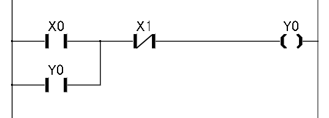
CODESYSを使用した制御シミュレーションと学習記録
国際標準規格 IEC 61131-3 に準拠したソフトPLC開発環境「CODESYS」を用いて、簡易的なプログラムの作成とシミュレーションを行いました。 (※旧Versionで作成中のため、内容に一部不正確な点が含まれる可能性があります)
ソフトPLC (Software PLC): 制御ロジックが専用ハードウェアから切り離され、汎用的なハードウェアや仮想化環境（ハイパーバイザー等）上で実行可能な制御システムです。
対して、三菱電機 Qシリーズやオムロン NJなどは、ハード・ソフト共に独自仕様となっており、これらはハードウェアPLCと呼ばれます。
IEC 61131-3 に準拠した、PLC / Motion / HMI を統合して開発できるソフトウェアです。 全世界で400社以上のOEM顧客、数千社のエンドユーザーでの稼働実績があります。
IEC 61131-3 で定義されている主要な言語を用いてプログラミングが可能です。



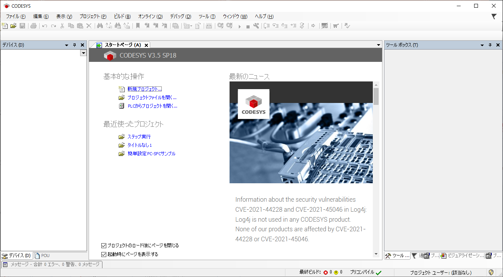
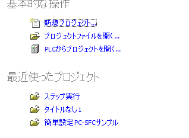
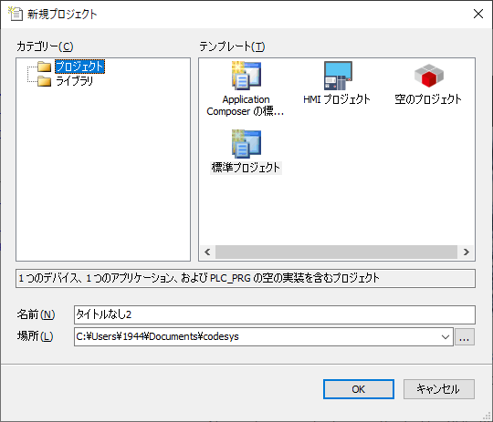
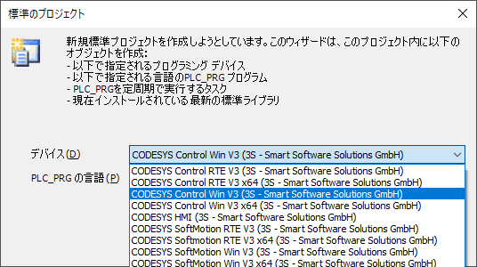
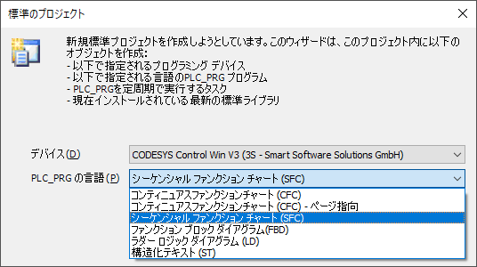
SFC：処理の流れと遷移条件を視覚的に配置し、各処理ブロックの中身を記述します。
HMI：タッチパネルのような操作画面を開発環境内で作成し、変数と紐付けます。
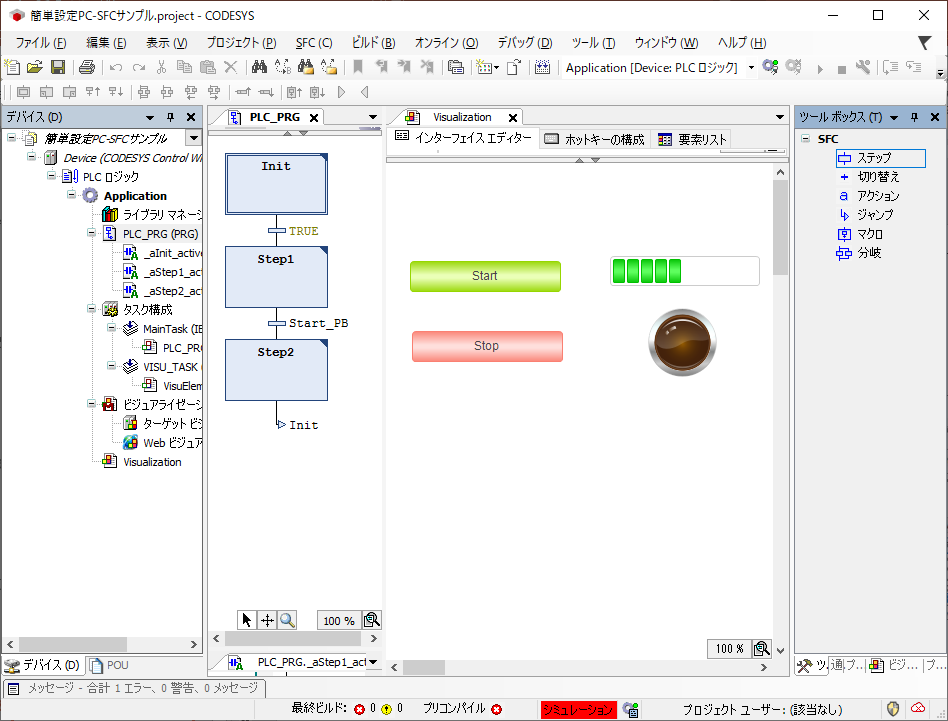
SFC：シーケンシャルファンクションチャート(SFC)を選択
HMI：タッチパネルのような操作画面を開発環境内で作成し、変数と紐付けます。
IL：ラダー言語で処理ブロックを記述します。
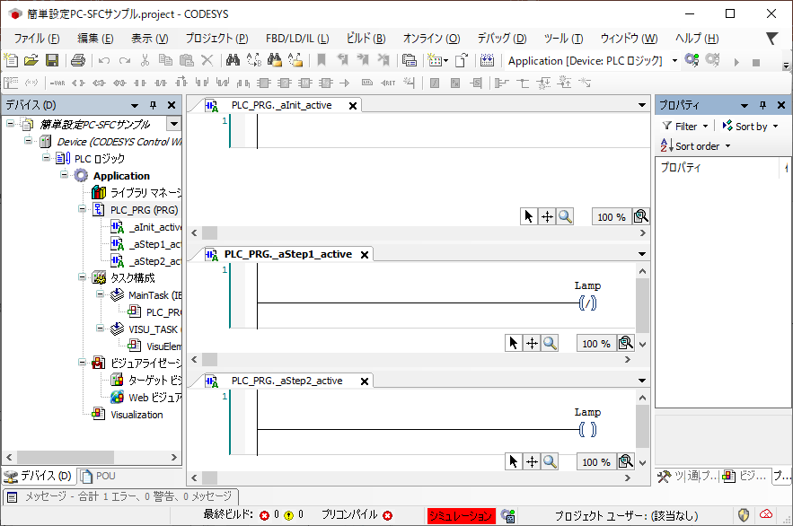
IL：ランプが光るように、ラダー言語で処理ブロックを記述します。
ログイン実行することで、実機がなくてもPC上でロジックと画面の連動を確認できます。ボタン押下でランプが点灯する等の基本的な動作デバッグが可能です。
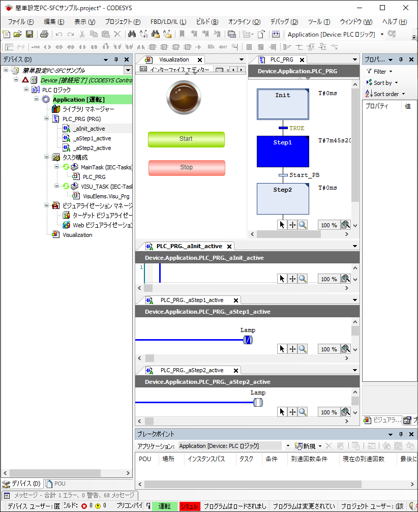
実行
スタートボタンを押すと処理２が実行され、ランプが点灯
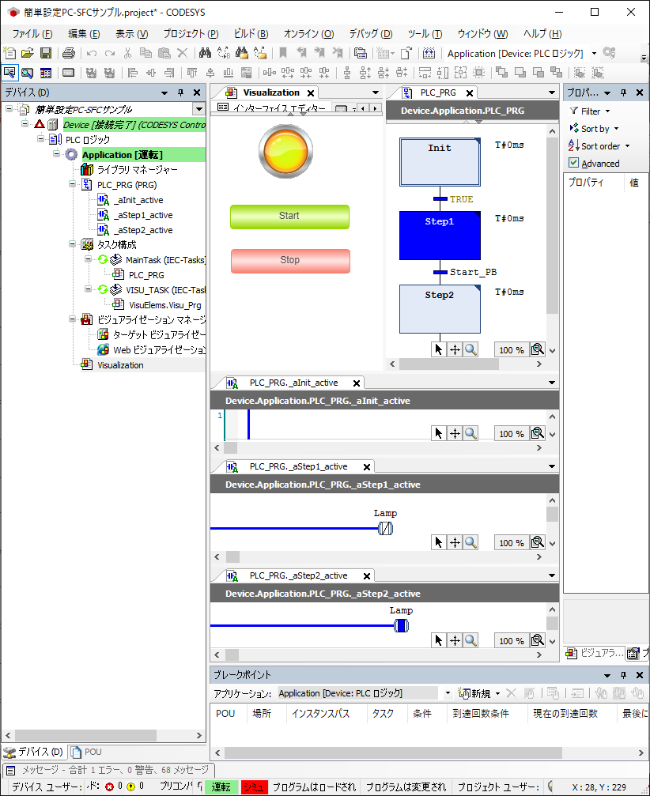
ランプが光る
他にも様々な動作を確認できます。
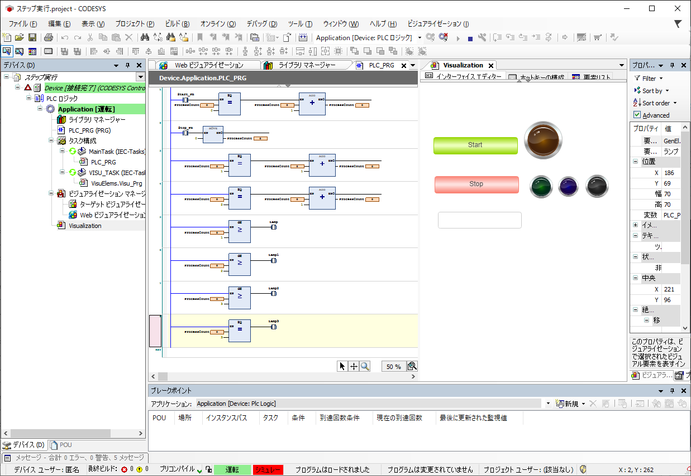
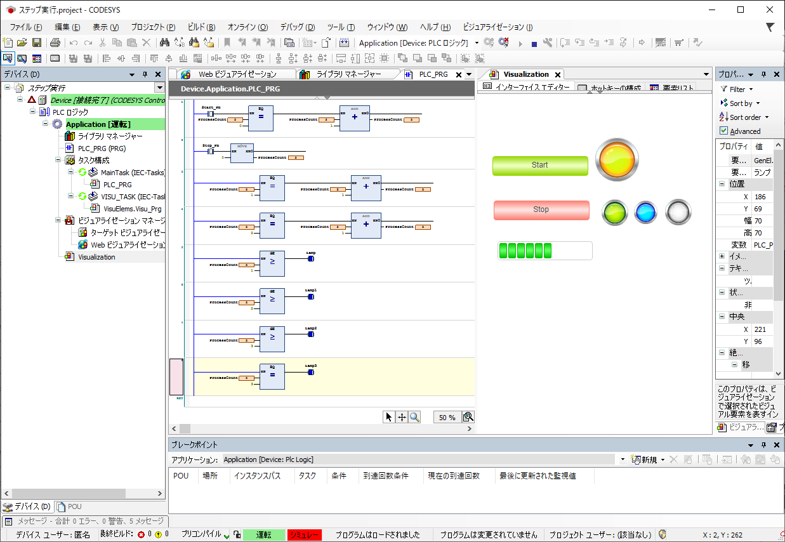